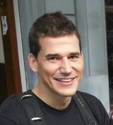
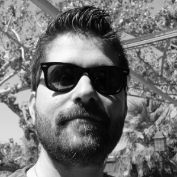
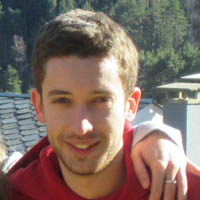
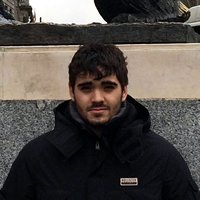
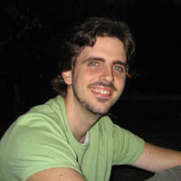
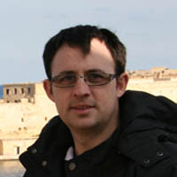
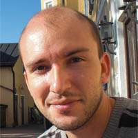
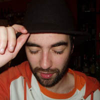

Patrocinadores
PHP Day Spain 2015 cuenta con el apoyo de los siguientes patrocinadores.
La fecha prevista para el evento es el 31 de Enero de 2015 y el lugar, como siempre, será Citilab.
Las charlas serán en español y de una duración de 45 minutos aprox cada una.
Networking + cervezas para todos. Comparte tus inquietudes entre risas.
Estamos abiertos a recibir propuestas de workshops para el viernes.
La entrada permite el acceso al evento e incluye el desayuno, la comida y por supuesto... las birras del final :)
| Horario | Sesión | |
|---|---|---|
| 08:00 - 09:00 AM | Registro y Bienvenida | |
| 09:05 - 10:00 AM | Jose Armesto Trade-offs |
|
| 10:05 - 11:00 AM | Carlos Buenosvinos Economía del Desarrollo de Software |
|
| 11:55 - 10:30 AM | Descanso | |
| 11:35 - 12:30 PM | Aitor Suso Dealing with fear in legacy projects |
|
| 12:35 - 13:30 PM | Felix Carmona Detrás del backend |
|
| 13:35 - 14:30 PM | Albert Casademont PHP7 |
|
| 14:35 - 15:15 PM | Comida | |
| 15:20 - 16:15 PM | Vicent Soria Ecosistema de desarrollo en PHP con Docker y Ansible |
|
| 16:20 - 17:15 PM | Marcos Quesada Como es GO visto desde PHP |
|
| 17:20 - 17:40 PM | Descanso | |
| 17:45 - 18:40 PM | Raul Fraile Esteganografía: ocultando información en PHP |
|
| 18:45 - 20:00 PM | PHP & Beers | |
Barcelona está definida por su dominio absoluto de arquitectura, calles históricas, hermosas playas, escena del arte increíble y no te olvides de las tapas audaces y deliciosas.
Citilab es un centro de innovación social y digital en Cornellà de Llobregat, Barcelona.
Explota y difunde el impacto digital en el pensamiento creativo, el diseño y la innovación que surge de la cultura digital.

Desarrollador Symfony, deslumbrado por la escalabilidad y la concurrencia se dejó seducir por el lado oscuro de Erlang y últimamente Go. Curioso por naturaleza, eterno aprendiz, disfruta saliendo de la zona de confort. Actualmente trabaja en Social Point, entorno symfony con mas de 5 Millones de usuarios diarios

Padre. Valentina. OSX. CTO. Atrápalo. Emagister. Ebay. Agile. Scrum. XP. Coach. Developer. Autor. Continuous Integration. Jenkins. TDD. PHP. Silex. Symfony. Zend Framework. Javascript. AngularJS. ImpactJS. DDD. REST. RabbitMQ. ElasticSearch. Appcelerator. Phonegap. Apache Cordova. Raspberry.

Desarrollador multiusos, le gusta lo mismo programar un módulo de RequireJS que un shellscript en Bash que un listener de Symfony o debugar con Wireshark una conexión TCP. Eso sí, con una obsesión por el rendimiento: disfruta arañando milisegundos y ahorrando bytes de memoria. Amante del software libre y contributor en varios proyectos del entorno Symfony, aunque no le da pereza mandar un Pull Request para arreglar una librería de Ruby o Node. Trabaja en Ulabox desde hace 3 años y medio.

Desarrollador PHP y Python, amante del DDD y de la arquitectura hexagonal. Predicador del Testing en todas sus facetas (TDD, BDD, etc). Actualmente trabaja en Social Point, la cual cuenta con millones de usuarios activos diarios y una altísima concurrencia. Aparte de desarrollar código para producción, y entre otras cosas, también se encarga de mantener la plataforma de métricas con millones de muestras, así como de temas de high performance.

Developer en Atrapalo. Gracias a casi 10 años de experiencia, sobretodo en start-ups de diferentes ámbitos y diferentes ambientes, he podido darme cuenta de la necesidad de seguir aprendiendo, mejorar y no dar nada por sentado, lo cual siempre tiene afectaciones positivas tanto en el mundo laboral como en el personal. Me encanta innovar y es raro que no este metido en algún proyecto personal, sobretodo probando nuevas tecnologías y seguir así aprendiendo.

Desarrollador web especializado en Symfony 2, aunque siempre dispuesto a utilizar otros lenguajes y herramientas, aprovechando el potencial de cada uno para lo que es más apropiado. Este interés le está llevando a trabajar con Python, Docker, Ansible, Terraform, Packer y un sinfín de nuevas tecnologías con las que cada vez se siente más cómodo. Actualmente trabaja como Automation Engineer en Social Point.

Desarrollador PHP/Symfony en Acilia Internet. SensioLabs Symfony Certified Developer y PHP Zend Certified Engineer. Actualmente estudiando un máster de investigación en tecnologías de la informática. Cuando tiene tiempo libre lo dedica a programar herramientas open source y leer.

Gallego y programador de nacimiento, llevo una vida muy ligada a la enseñanza. Tras 3 años como Development Trainer en Softonic, ayudando a mejorar las habilidades técnicas de muchos compañeros, actualmente trabajo como Software Architect Engineer, también en Softonic. Más enfocado al backend que al frontend, me siento mucho más cómodo delante de una terminal de unix, que delante del Photoshop.
PHP Day Spain 2015 cuenta con el apoyo de los siguientes patrocinadores.
Sigue el evento o ponte en contacto con nosotros por las redes sociales.